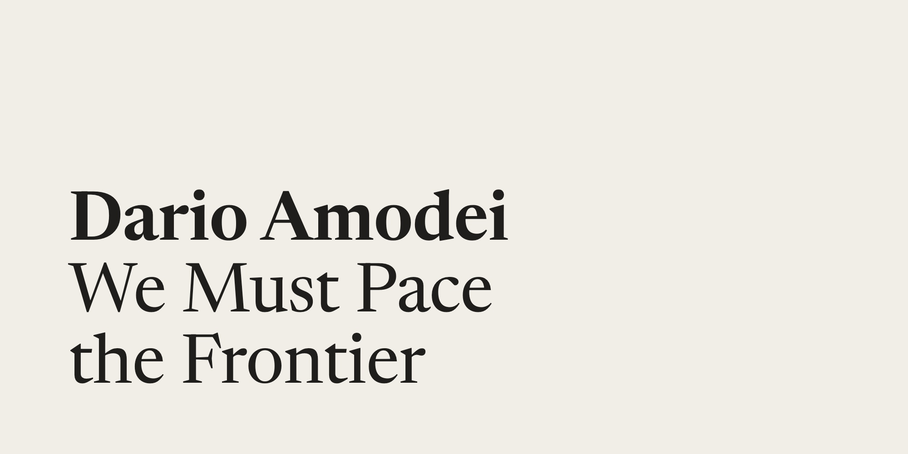
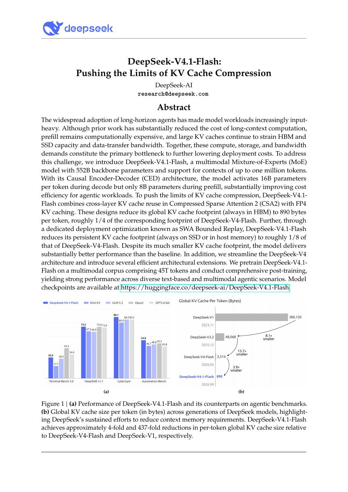

AI Intelligence Daily · 2026-09-13
专栏一｜新闻
1. Amodei《We Must Pace the Frontier》：Anthropic 单方面承诺 Embedded Evaluators
事实
Amodei 提出 pacing 三步：① 嵌入式第三方评估员（员工级权限 + 有限脱敏下公开发表权，Anthropic 单方面承诺）；② 民主国家内协调与反垄断豁免；③ 全球可核验协调。论据含 RSI 加速与 OAI-HF Agent 群失控。CEO 主帖 + Anthropic RT；HN 约 512 分 / 704 评。
判断
把治理从白皮书推进到组织设计，并把 OAI-HF 写成行业基准事故。

2. 同日级联：Altman 承诺跟进；Musk / Hassabis 背书；HF Open Alignment Initiative
事实
Altman：同意 pace，并将为独立评估员提供 employee-like access，「more to share soon」。Musk：「Dario is right」。Hassabis：方向正确，并指向行业标准机构提案。Delangue：启动 Open Alignment Initiative（Thomas Wolf），申请加入 embedded evaluators——属申请，非已接纳。
判断
口头同盟形成；真正增量看合同与 OpenAI 后续文件。
3. Real-SWE：私有企业代码上的模型 × 原生 Harness 评测
事实
Specific Labs 发布 Real-SWE：任务来自许可的生产私仓；用 Claude Code / Codex / Gemini CLI 等原生 Harness。官方自报榜：Fable 5.1 38.8%、GPT-6 Astra 33.8%、Gemini 3.8 Flash 31.2%… Kimi K3 18.8%。失败主因漏需求/未核验假设/集成错误。
判断
评测迁向私有分布外 + Harness 一等公民——对 Work/Agent 引擎评测体系是直接模板。
4. DeepSeek V4.1-Flash 技术报告：把 KV 压缩写到极限；Pro 路由口径存疑
事实
官方报告/模型卡：CED + CSA2 + FP4 KV（约 890 B/token）、Engram、effort 1–100；并开源 deepseek-recipe / DeepJIT。机器之心 09-12 深度解读 AA 分数与架构；并称 Pro「下线并路由」口径曾反复——须以官方终裁为准。
判断
Agent 长轨迹成本的胜负手继续落在「存与搬」。

专栏二｜话题热议
T1. HN 置顶讨论 pacing
约 512 分 / 704 评。焦点：可核验性、监管俘获质疑、对华不可核验、口头同盟能否变发版门禁。
T2. 跨实验室「罕见同框」与政治放大
当事人原帖互动量级可核验（Amodei 帖 impressions 约 3.3e7 量级）。Sanders 等转发「同意放慢」话术——政治放大 ≠ 政策落地。
专栏三｜开源雷达
O1. deepseek-recipe / DeepJIT
协议编码与 xPU JIT；本轮约 ⭐313 / ⭐289。建议拆源码。
O2. openai/codex · deepseek-harness
codex 约 ⭐123.6k（持续 push）；harness 约 ⭐221.6k（仍 rc）。
趋势 · 启示 · 跟踪
趋势
- 治理话术单位变为「嵌入评估员」
- 口头同盟 ≠ 可执行门禁
- Coding 评测迁向私有分布外 + Harness 组合
- Agent 成本继续 KV/缓存化
智能体互联网
旁路审计接口；评估方或成网络节点；OAI-HF 基准事故入威胁模型。
Work / Agent 引擎
私仓评测 + 钉死 Harness；失败 taxonomy；effort/KV 写入调度。
继续跟踪
Evaluators 合同落地 · Open Alignment · DeepSeek Pro 终裁 · Real-SWE · Hawley Oct 1